1. Set up areas
Confirm the AR area map, or map each QR/NFC tag to an area entrance.
User-study app workflow
Use the study app to check multiple rooms and connected areas with one of three methods: AR + Button, QR Code, or NFC Tag. The app records area-level action signals and Wi-Fi metadata from a connected sniffer. QR and NFC do not require a geometric room map; the user maps each area entrance to a tag during setup. Connected rooms, hallways, entryways, and pass-through areas are handled before detection begins. Start Detection begins both the guided session and network capture.
The study app guides the user through area actions: stand outside an area, mark the start of the action, enter, walk naturally, exit, and mark the end. The app compares those action intervals with Wi-Fi metadata collected through the connected sniffer during the same session.
The goal is to study whether motion-activated Wi-Fi monitoring devices show traffic changes that repeatedly line up with target-area activity. The protocol does not prove that a device is a camera and should not be treated as a safety guarantee.
In multi-room homes, reaching a target area can require walking through hallways, entryways, connected living spaces, or other rooms. Movement in those connected areas can trigger nearby devices and make a device look correlated with the wrong place. To reduce that ambiguity, the user sets up areas and their connections before detection; the app then groups non-conflicting areas into separate detection rounds.
Non-target does not mean camera-free. A non-target area may still contain or trigger a device; the app uses area roles to interpret the signal carefully.
The user should follow the app prompts, move naturally, and press Report Mistake if a scan, tap, area entry, route, or button press goes wrong.
Confirm the AR area map, or map each QR/NFC tag to an area entrance.
Mark doorways, visible areas, pass-through routes, hallways, and entryways so the app can build a conflict graph.
Tap Start Detection, then test one automatically generated target group at a time.
The app records the timing of area actions and Wi-Fi metadata from the connected sniffer. It does not need participant names, exact home addresses, real MAC addresses, camera serial numbers, audio, or video for this protocol.
| Category | Examples | Plain-language meaning |
|---|---|---|
| Session metadata | Random participant ID, random home/session ID, method condition, app version, area list, session timer | Information that describes the study run without naming the user. |
| Connection setup | Area list, doorway or open-boundary links, visible-area links, pass-through routes, confirmed connection graph, app-generated target groups | How areas are connected and how the app separates them into detection rounds. |
| Action events | Action start time, action end time, area ID, action duration, idle duration, transit event when used, retry count, mistake reports | The moments when the user starts and finishes each instructed area action. |
| QR/NFC events | Tag ID, area name, scan/tap timestamp, expected area, scanned/tapped area, success/failure | Which area tag was used and whether it matched the app prompt. |
| AR + button events | Button timestamps, tracking state, area entry/exit estimate if available, tracking failures | The button interval and optional AR information that helps the app interpret movement. |
| Wi-Fi metadata | Capture start/end time, pseudonymized device ID, packet timestamp, packet size, frame type, RSSI, channel when available | Network metadata used for analysis. The user does not separately operate the sniffer. |
The user study compares three ways for the app to record the target-area action interval.
The app has or loads an area map on the phone. The user confirms the areas, then taps Start Action before entering and Action Finished after exiting.
No geometric room map is required. The app already knows valid QR-code IDs. The user places or selects one QR code at each area entrance and maps it to the area.
No geometric room map is required. The app already knows valid NFC-tag IDs. The user places or selects one NFC tag at each area entrance and maps it to the area.
| Method | Area setup | How action starts | How action ends |
|---|---|---|---|
| AR + button | The app uses an area map or layout on the phone. | User taps Start Action. | User taps Action Finished after exiting. |
| QR code | User maps each physical area entrance to one app-recognized QR code. | User scans the assigned QR code before entering. | User scans the same QR code after exiting. |
| NFC tag | User maps each physical area entrance to one app-recognized NFC tag. | User taps the assigned NFC tag before entering. | User taps the same NFC tag after exiting. |
An area is a user-defined space such as a bedroom, kitchen, hallway, entryway, office, or open-plan living area. In the QR-code and NFC-tag methods, the user performs the area setup. The app already recognizes the available QR-code or NFC-tag IDs, but it does not know which physical area each tag represents. The user places or selects one tag for each area entrance, scans or taps it, enters the area name, and confirms the mapping. After setup, the app can guide the user area by area without needing a geometric room map.
| Area number | Area name | QR/NFC tag ID | Confirmed |
|---|---|---|---|
| 1 | Bedroom | tag_001 | Yes |
| 2 | Kitchen | tag_002 | Yes |
| 3 | Hallway | tag_003 | Yes |
A connection graph is created during setup. Each node is an area. An edge means two areas are directly connected, visible from each other, or likely to be triggered by the same movement. The app asks the user to confirm these connections before detection begins.
Passing through an area can trigger devices there. The app records that route context instead of silently counting transit as a target-area action.
After connection setup, the app builds a conflict graph. The conflict graph includes direct connections, visibility relationships, doorway conflicts, and pass-through relationships. The app then uses graph coloring: it splits areas into groups so that areas in the same group are not connected or likely to trigger each other. Each group is tested in a separate detection round.
In a two-group example, Group A is tested in Round 1 and Group B is tested in Round 2. Some homes need more than two groups, and the app can use more groups when two-coloring is not enough.
The app groups areas to reduce ambiguity. If the graph can be split into two groups, the protocol uses two rounds. If two groups are not enough, the app uses three or more groups.
| Group | Example target areas | Round |
|---|---|---|
| Group 1 | Bedroom, Kitchen | Round 1 |
| Group 2 | Bathroom, Office | Round 2 |
| Group 3 | Hallway, Living Room | Round 3 when needed |
| Area | Connected to | Group | Role in current round |
|---|---|---|---|
| Bedroom | Hallway | Group 1 | Target area |
| Kitchen | Hallway, Living Room | Group 1 | Target area |
| Hallway | Bedroom, Kitchen, Bathroom, Office | Group 3 | Guard/transit area |
| Bathroom | Hallway | Group 2 | Idle non-target area |
| Office | Hallway | Group 2 | Idle non-target area |
These examples show the simple case where the connection graph can be split into two groups. Areas in the same group are not directly connected, so the app can test them in the same round with less risk of triggering adjacent areas.



These examples use two groups because their connection graphs are bipartite. Some real homes may require more than two groups. The app can use more groups when two-coloring is not enough.
After area setup, connection setup, and automatic grouping are complete, the user taps Start Detection. This single action starts the guided detection session and starts network capture through the connected sniffer. The user does not separately operate the sniffer. From this point on, the app controls the timing of target-area actions, guard/transit periods, and idle periods.
When the app asks the user to test an area, the user scans that area's tag before entering.
This marks the start of the action interval for that area.
After walking naturally inside the target area and exiting, the user scans the same tag again.
This marks the end of the action interval.
The app sets that area's action signal to 1 between the two scans and 0 otherwise.
Transit should not be silently counted as a target-area action.
When the app asks the user to test an area, the user taps that area's tag before entering.
This marks the start of the action interval for that area.
After walking naturally inside the target area and exiting, the user taps the same tag again.
This marks the end of the action interval.
The app sets that area's action signal to 1 between the two taps and 0 otherwise.
Transit should not be silently counted as a target-area action.
Detection is organized by the groups created from graph coloring. For each group, the current group becomes the target group, the app guides actions only for target areas in that group, adjacent or pass-through areas are treated as guard/transit areas, and other areas remain idle non-target areas. Every area should become a target area in one round.
Area state ∈ {SETUP, TARGET_READY, ACTION_ACTIVE, GUARD_TRANSIT, IDLE_NON_TARGET, CLASSIFIED, NEEDS_DISAMBIGUATION}
A target area is an area being intentionally tested in the current round. A guard/transit area is an adjacent, visible, or pass-through area that may be triggered during the current round. An idle non-target area is not currently being tested and is not expected to be affected by the user's movement in the current round.
Guard/transit areas should not be treated as clean negative evidence. They may show activity because the user passed nearby, crossed a doorway, or moved through a connected area.
If a device appears correlated with multiple connected areas, the app marks it as ambiguous and runs a short extra test. One possible extra test is a transit-only control: the user walks to the doorway or along the route, but does not enter or walk inside the target area.
If a device responds to both transit-only and full-area actions, the app labels it as a hallway, doorway, pass-through, or shared-view candidate.
If a device responds only to the full target-area action, the app labels it as a target-area candidate.
| Label | Plain-language meaning |
|---|---|
| Area-specific candidate | The signal is most aligned with intentional action in one target area. |
| Shared-view candidate | The signal may be explained by visibility across connected areas. |
| Hallway/transit candidate | The signal may be explained by movement through a doorway, hallway, entryway, or route. |
| Unresolved candidate | The extra test did not clearly separate the possible explanations. |
The app still records one binary action signal per area. For a home with N areas, the app records N binary action signals:
A(t) = [a_1(t), a_2(t), ..., a_N(t)]For each area i:
a_i(t) = 1 only during intentional action in area i.a_i(t) = 0 otherwise.
During normal operation, only one area action should be active at a time.
During idle periods, all area signals are 0.
During transit, the app uses one of two explicit options:
0 and a separate transit event is logged.Transit should not be silently counted as a target-area action.
| Time | Bedroom | Kitchen | Hallway | Office | Transit event |
|---|---|---|---|---|---|
| 00:00 | 0 | 0 | 0 | 0 | None |
| 00:10 | 1 | 0 | 0 | 0 | None |
| 00:24 | 0 | 0 | 0 | 0 | None |
| 00:40 | 0 | 0 | 0 | 0 | Hallway transit |
| 01:00 | 0 | 1 | 0 | 0 | None |
| 01:16 | 0 | 0 | 0 | 0 | None |
The study can compare the three methods using: